PETUNJUK PENGGUNAAN
NO-TEXT
1. Klik tombol Pilih Mode pada landing page
Dengan mengklik tombol Pilih Mode akan menuju ke halaman pilihan mode yang berisi 3 mode: Mode Pemupukan, Mode Penyiangan, Mode Rute Kustom.

2. Pilih mode yang ingin disimulasikan
Setelah mengklik tombol Pilih Mode akan ditampilkan 3 pilihan mode seperti gambar di bawah ini.
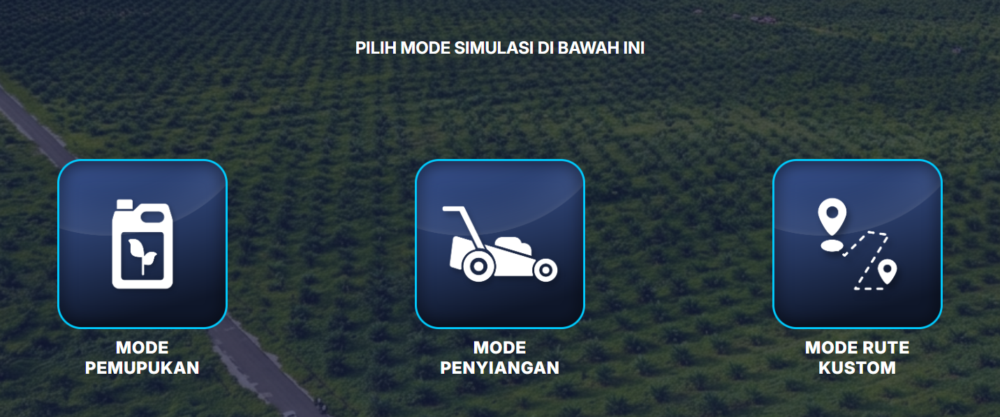
3. Simulasi siap digunakan
Seperti inilah tampilan dari salah satu simulator website ini.
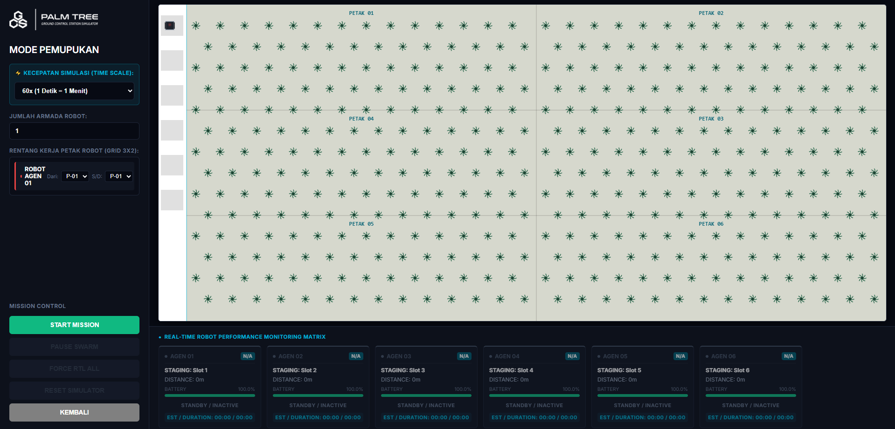
MODE PEMUPUKAN & MODE PENYIANGAN
Bagian pertama, simulator ini menggunakan canvas seperti berikut.
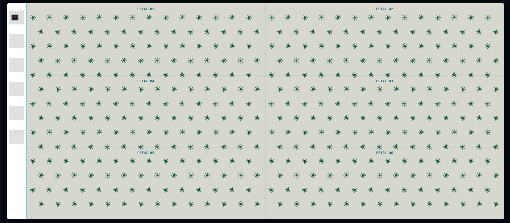
Seperti yang ditunjukkan pada gambar, canvas ini berisikan tempat robot diluncurkan yang berjumlah 6 kotak sesuai dengan kapasitas maksimal dari simulator. Canvas ini menggambarkan lahan perkebunan kelapa sawit seluas 2 hektar dengan skala 1 meter : 0.3652 pixel. Jika digambarkan berbentuk persegi panjang, maka lahan ini dapat memuat 392 pohon kelapa sawit yang tersusun secara zig-zag dengan jarak 9 meter masing-masing pohon. Susunan pohon terdiri dari 70 pohon di petak 1 sampai 4, 56 pohon di petak 5 dan 6. Tata letak pada canvas ini berlaku pada semua mode.
Pada Mode Pemupukan dan Mode Penyiangan ini memiliki sistem control simulator yang sama. Berikut ini adalah tampilan dari kedua mode simulasi tersebut.
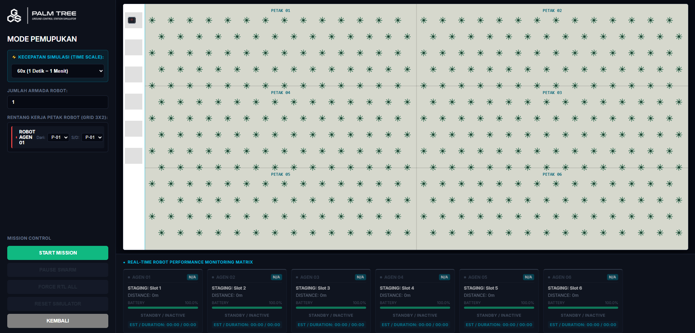
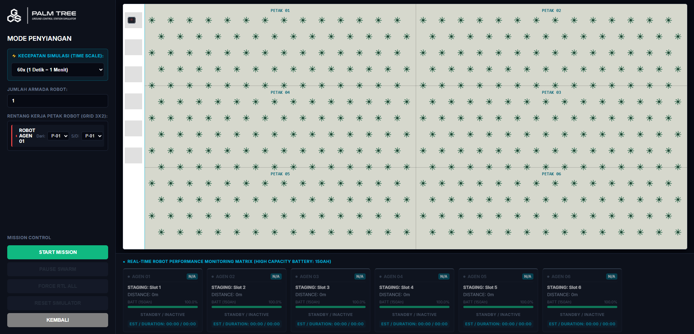
Dari simulasi ini ada beberapa section yang perlu diperhatikan. Section tersebut yaitu canvas sebagai area perkebunan kelapa sawit dimana robot lawn mower disimulasikan, sidebar tempat pengaturan jumlah robot beserta lokasi kerja dan pengaturan kecepatan simulasi, mission control untuk mengendalikan jalannya simulasi, serta panel monitoring kinerja robot lawn mower.
Berikut adalah tampilan dari sidebar.
Dalam sidebar tersebut terdiri dari pengaturan kecepatan simulasi, pengaturan jumlah robot, dan pengalokasian misi robot. Kecepatan simulasi tersedia dari real time, 10x, 30x, 60x, dan 120x. Jumlah robot yang disimulasikan terbatas maksimal 6 robot. Di bagian bawah terdapat section pengalokasian misi masing-masing robot yang disimulasikan.
Selanjutnya section Mission Control.
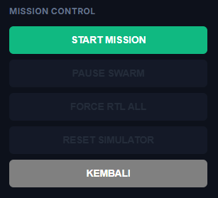
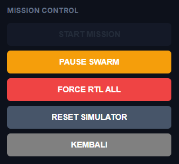
Pada section Mission Control, terdapat 5 tombol untuk mengendalikan jalannya simulasi. Ketika simulasi belum dijalankan, maka tombol Start Mission untuk memulai simulasi dan tombol Kembali untuk menuju halaman pilihan mode yang akan menyala pertanda dapat berfungsi. Sedangkan pada saat simulasi sudah dijalankan, tombol Start Mission akan meredup. Tombol yang dapat difungsikan ada 4 yakni tombol Pause Swarm untuk menjeda simulasi robot, tombol Force RTL untuk memerintahkan robot kembali ke lokasi peluncuran robot, tombol Reset Simulator untuk mengatur ulang simulasi, dan tombol Kembali untuk menuju halaman pilihan mode. Tombol Kembali dapat difungsikan ketika simulasi sudah selesai atau sudah dilakukan Reset Simulator.
Kemudian real-time monitoring panel.
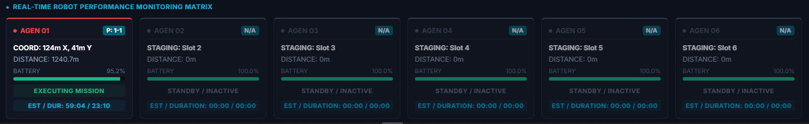
Real-time monitoring panel menyajikan robot yang menyala menjalankan misi. Dari masing-masing robot yang menjalankan misi akan menunjukkan keterangan area misi (P:1-1), lokasi koordinat robot terkini, jarak yang sudah ditempuh robot dalam menjalankan misi, persentase baterai, status ketersediaan robot, serta estimasi dan durasi robot dalam menjalankan misi.
MODE RUTE KUSTOM
Seperti namanya, mode ini menyediakan kebebasan pengguna untuk memilih sendiri rute yang akan dijalankan oleh robot. Cara pemilihan rute adalah dengan mengklik pada area canvas seperti gambar berikut.
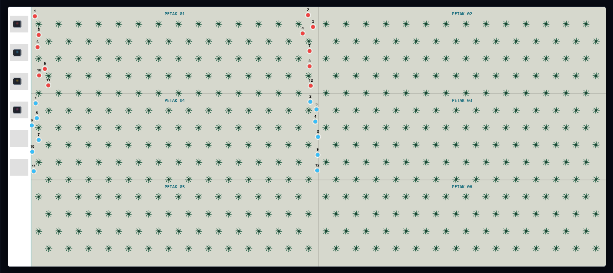
Pemilihan rute dilakukan pada masing-masing robot yang ditugaskan misi. Keterangan robot yang sedang dibuatkan rute berada pada sidebar simulator.
Selain terdapat pemilihan robot yang sedang dibuatkan rute, sidebar ini juga menampilkan pilihan jumlah robot yang akan disimulasikan dan kecepatan simulasi. Untuk mendukung fleksibilitas pengguna, pemilihan rute dapat di undo dan redo sehingga tidak harus mengulang dari awal jika ada kesalahan.
Pada Mission Control sama dengan mode lainnya. Seperti berikut.
Selanjutnya adalah real-time monitoring panel.
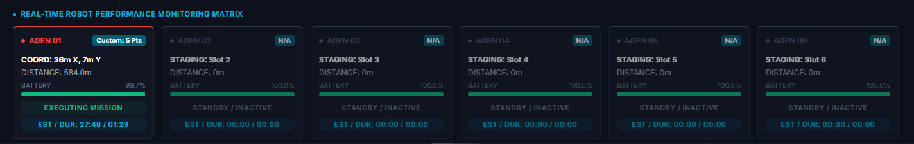